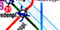
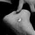

|
• SMS, h 00:12
Zu Fuß, h 03:14
 Metro chiusi! Un'ora di camminata a piedi da Uno City a Stephansplatz.
L'ultima notte a Wien: les jeux sont faits.
È bello aver recuperato una città dopo anni basati su false impressioni.
Vienna è una città più grande di Milano ma vivibile come Bologna.
 Ieri pome rollata per il Prater, due ore e mezza.
Domani partenza per Linz.
Ora chiudo, palpebra molto pesante.
• SMS, h 10:23
h 11:34
Lasciamo definitivamente l'ostello, lasciando Vienna per Linz. Suonano i Massive Attack, l'atmosfera è silenziosa e malinconica. Abbiamo vissuto Vienna poco ma bene. Non possiamo certo dire di essere stati turisti. Abbiamo scoperto una grande città e apprezzato i suoi abitanti, davvero un'eccezione tra i paesi teutonici.
Avremmo davvero voluto continuare nel nostro percorso, consci di aver visto davvero poco.
Non abbiamo raggiunto quell'ambiente "underground" a me caro... davvero underground :-))
Vienna, la città dell'eclisse.
Ripenso improvvisamente a ieri, uno spettacolo bellissimo.
Ripenso allo strano clima, alla luce livida che illumina questo strano rito europeo.
Uomini e donne e gay riuniti a seguire tutti assieme uno spettacolo celeste... davvero da new age di fine millennio! :-))
Era strano assistere ad uno spettacolo senza applausi, urla, grida e cori. Uno spettacolo della natura vissuto silenziosamente. Un'esperienza interiore, un rapportare sé stessi alla grandiosità del cosmo. Un'esperienza individuale vissuta collettivamente. Bello.
Non era una canzone, erano pidocchi.
A Vienna l'occhio di "Casablanca" con pixel in ceramica.
h 13:24
Linz again. Ci chiediamo come diavolo abbiamo fatto a capitare di nuovo qui. Ci chiediamo come faccia Birgit ad abitare in questo posto, e ci rispondiamo che dovremmo chiederlo a lei. Ci ha comunque consigliato l'Ars Electronica Museum.
On the road, h 20:57
A 50 km da Graz trovato orsetto maialetto in autogrill.
Graz, h 22:02
Camera 307, io e Luca.
Città ricca e movimentata. Centro storico sulla collina.
Il primo impatto è stato positivo, nonostante soldi e macchinoni. Sarà forse stato il Graz Jazz Summer Festival 99.
h 22:30
Trovato un Nuovo Testamento trilingue nel cassetto. Apro a caso due punti e tengo aperte le pagine con le dita. Marco, Apocalisse, 22. Segni.
Guardo l'ora, 22:22. Una biondina esce nuda dal bagno, lasciando me e Luca basitissimi.
• SMS, h 23:22 |
|
• SMS, h 01:53
Graz, h 03:10
Jazz, passeggiata e biliardo, questa la nostra serata.
In effetti Josto ha ragione: gli italiani che abbiamo avuto occasione di incontrare sono davvero degli scassacazzo lagnosi e rompiballe.
Nessun programma, solo punti fermi e desideri. Tutto il resto... VIAGGIO!
h 09:36
Seduto sul cesso di un bagno dell'hotel. Visuale da film.
DISEGNO
In pratica un cunicolo con il cesso alla fine, seduto guardando la porta come se stessi aspettando qualcuno.
• SMS, h 12:28
h 13:37
Penna nuova.
Partenza per Ljubljana dopo la mostra Die Farben Schwarz e dopo momenti di indecisione sul ns prossimo futuro. Alternativa a Graz era Trieste, ma non ha riscosso un gran successo. Insomma gruppo diviso e incerto... idea! tra i due litiganti il terzo se la gode: Ljubljana!
On the road again!
Cartello stradale direzione Slovenien vistosamente corretto: una volta era Yugoslavien.
h 13:40
in autostrada.
• SMS, h 13:48
• SMS, h 13:55
• SMS, h 20:16 |